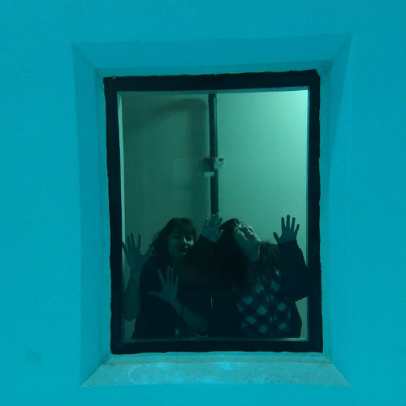

2017 - 2018 Team UWROV
Welcome to the page of the 2017-2018 team!
This page will feature the accomplishements and projects of the 2017-2018 team as they develop an ROV for the 2018 MATE competition.
Our Team
Iain Bromley
Karine Chen
Myranda Dang

Randy Hemion
Jerry Jarvis
Gloria Ximing Lu
Aaron Mau

Luke Schefke

Willem Weertman
Our UW Mentors
Click on the images below to link to our mentors' UW profile pages


More Photos
Here are some more photos.
(1) The team in the UW's seaglider Lab. Note the pink seaglider to the right.
(2) The team in a different part of the seaglider lab.
(3) Team members looking through the viewing window of the UW's seawater test tank.

(4) Other team members in the viewing window of the UW's seawater test tank.
Professional Assembly Practices
One common denominator of modern manufacturing management philosophies, seen in the scientific management of Taylor or Gastev, the Ford principle of CANDO, and the 5S of the Toyota Production System, is the idea that tools in a workspace must be arranged so that they are easily accessible. Rather than storing our combination wrenches in drawers, we hang them on a mobile workstation for easy access and quick identification of what wrenches are use or missing.
The Mountz preset torque screwdriver pictured is built with a cam-over design to prevent a fastener or bolt from being over-torqued. The use of torque tools in our assembly processes mimics the professional assembly processes in industry to better prepare students for their careers as engineers and ensures that the fasteners on our vehicle will function under cyclical loading.
Only the Best
We pride ourselves on the quality of our tools, instruments and equipment.
Aerospace Standards are used in the military services and private sector. The plating on tools marked with the “AS” symbol, visible on the Armstrong socket in the image above, must pass stringent abrasion testing, and aerospace approved tools have higher requirements for corrosion resistance than ASME standards.
Innovations
A memristor from Knowm, Inc., shows parasitic capacitance when the output voltage is measured with an oscilloscope. These are manufactured at Boise State University.
To allow for precision casting, we built our own degassing station with a domestically sourced pump and vacuum chamber. Thought modest in capacity, it is premium in quality.
One Potential Design for a Planned ROV
The images below show the first iteration of a potential future frame design. One goal with this iteration was to design an ROV that is easy to maintain. Several features of this design were inspired by Shigeo Shingo’s Single Minute Exchange of Die (SMED) system to reduce set-up time. These features include the use of milled U-slots instead of drilled holes, the use of wing nuts instead of hex nuts and the use of two washers underneath each nut to reduce friction.

(1) View of the frame, the pressure case and the L-bolt.
(2) The pressure case is set on the frame.
(3) The pressure case is slid forward on the frame, held in place by the rod at the front.
(4) The pressure case is secured with an L-bolt and wing nut.